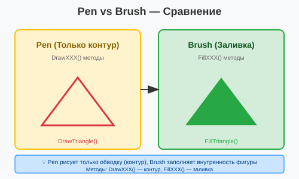
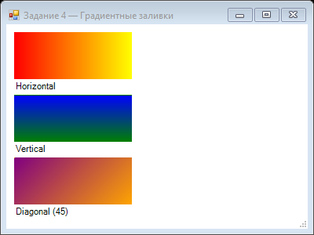
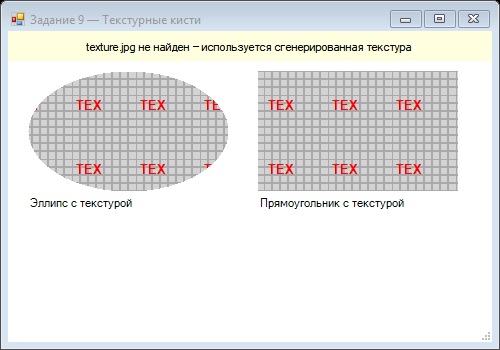

Урок 2.4: Кисти (Brush) и заливка
📌 Ключевые моменты этого урока:
- Brush заполняет ВНУТРЕННОСТЬ (interior) фигур, Pen рисует контур
- SolidBrush — простая заливка одним цветом
- HatchBrush создает штриховку (линии, точки, кресты и т.д.)
- LinearGradientBrush создает плавный переход между двумя цветами
- RadialGradientBrush — градиент от центра к краям
- TextureBrush заполняет изображением как текстурой
- Есть готовые Brushes (Brushes.Red, Brushes.Blue и т.д.)
Работа с Brush в Visual Studio
Brush — это объект для заливки фигур. В Visual Studio вы можете использовать IntelliSense для изучения всех типов кистей.
Создание Brush с помощью IntelliSense:
В обработчике Paint:
private void Form1_Paint(object sender, PaintEventArgs e)
{
Graphics g = e.Graphics;
// Напишите "new SolidBrush(" и увидите подсказку
SolidBrush brush = new SolidBrush(Color.Red);
// После "brush." увидите все свойства
brush. ← Нажмите точку:
┌──────────────────────────────────┐
│ SolidBrush │
│ ▼ │
│ • Clone() │
│ • Color │
│ • Dispose() │
│ ... │
└──────────────────────────────────┘
}Использование предопределенных Brushes:
В Visual Studio IntelliSense покажет все готовые Brushes:
Напишите "Brushes." и увидите список:
Brushes. ← Нажмите точку:
┌──────────────────────────────────┐
│ Brushes │
│ ▼ │
│ • AliceBlue │
│ • AntiqueWhite │
│ • Aqua │
│ • ... │
│ • Black │
│ • Blue │
│ • ... │
│ • White │
│ • Yellow │
└──────────────────────────────────┘
Эти Brushes уже созданы, имеют сплошной цвет и не требуют Dispose()Brush — инструмент для заливки
Brush определяет, как будет ЗАПОЛНЕНЫ (fill) внутренность фигур. Это противоположность Pen, которая рисует контуры.
Линия сравнения:

Разница между Pen (контур) и Brush (заливка)
SolidBrush — простая заливка
Самый простой тип brush — заливка одним сплошным цветом.
Создание и использование:
// Создание brush'а
SolidBrush redBrush = new SolidBrush(Color.Red);
g.FillRectangle(redBrush, 10, 10, 100, 50);
// С настройками цвета
SolidBrush transparentBrush = new SolidBrush(Color.FromArgb(128, 0, 255, 0));
g.FillEllipse(transparentBrush, 50, 50, 100, 100);
// Готовые brush'и (одноцветные)
g.FillRectangle(Brushes.Blue, 150, 150, 100, 50);
g.FillEllipse(Brushes.Green, 200, 200, 80, 80);Важно: создавайте SolidBrush один раз и переиспользуйте, не создавайте в цикле!
HatchBrush — штриховка
Создает узор из линий, точек, квадратов и т.д. вместо сплошной заливки. Очень хорошо для печати и диаграмм.
Доступные стили штриховки:
using System.Drawing.Drawing2D;
// Основные стили
HatchBrush hatchBrush = new HatchBrush(
HatchStyle.Horizontal, // Горизонтальные линии ═════
Color.Black, // Цвет предпочтительнее (forecolor)
Color.White // Цвет фона (backcolor)
);
// Другие стили:
HatchStyle.Vertical; // Вертикальные линии ║║║║
HatchStyle.Cross; // Крест ╬╬╬╬
HatchStyle.Diagonal; // Диагональные ╱╱╱╱
HatchStyle.BackDiagonal; // Обратные диагонали ╲╲╲╲
HatchStyle.DottedGrid; // Точечная сетка ⋮⋮⋮⋮
HatchStyle.DottedDiamond; // Точечные диаманты
HatchStyle.Brick; // Кирпичи
HatchStyle.Weave; // ПлетениеПрактический пример:
// Рисуем диаграмму с разными штриховками
var styles = new[]
{
HatchStyle.Horizontal,
HatchStyle.Vertical,
HatchStyle.Cross,
HatchStyle.Diagonal
};
for (int i = 0; i < styles.Length; i++)
{
var brush = new HatchBrush(styles[i], Color.Black, Color.LightGray);
g.FillRectangle(brush, 10 + i * 120, 10, 100, 100);
brush.Dispose();
}LinearGradientBrush — линейный градиент
Создает плавный переход между двумя (или более) цветами вдоль прямой линии.
Создание градиента:
// Создание: от точки А к точке B, от цвета 1 к цвету 2
LinearGradientBrush brush = new LinearGradientBrush(
new Point(0, 0), // Начальная точка
new Point(200, 0), // Конечная точка (горизонтальный градиент)
Color.Red, // Начальный цвет
Color.Blue // Конечный цвет
);
g.FillRectangle(brush, 10, 10, 200, 100);Разные направления градиента:
// Горизонтальный градиент (слева направо)
var hGradient = new LinearGradientBrush(
new Point(0, 0),
new Point(200, 0),
Color.Red,
Color.Yellow
);
g.FillRectangle(hGradient, 10, 10, 200, 50);
// Вертикальный градиент (сверху вниз)
var vGradient = new LinearGradientBrush(
new Point(0, 0),
new Point(0, 100),
Color.Blue,
Color.Green
);
g.FillRectangle(vGradient, 220, 10, 100, 100);
// Диагональный градиент
var dGradient = new LinearGradientBrush(
new Point(0, 0),
new Point(200, 200),
Color.Purple,
Color.Cyan
);
g.FillRectangle(dGradient, 10, 120, 200, 200);Несколько цветов (ColorBlend):
LinearGradientBrush brush = new LinearGradientBrush(
new Point(0, 0),
new Point(300, 0),
Color.Red,
Color.Blue
);
// Добавляем промежуточный цвет (зеленый) в50% пути
ColorBlend colorBlend = new ColorBlend(3);
colorBlend.Colors = new[] { Color.Red, Color.Green, Color.Blue };
colorBlend.Positions = new[] { 0f, 0.5f, 1f };
brush.InterpolationColors = colorBlend;
g.FillRectangle(brush, 10, 10, 300, 50);RadialGradientBrush — радиальный градиент
Градиент лучится из центра наружу, создавая эффект подсветки:
using System.Drawing.Drawing2D;
GraphicsPath path = new GraphicsPath();
path.AddEllipse(10, 10, 200, 200);
var brush = new PathGradientBrush(path);
brush.CenterColor = Color.Yellow; // Центр
brush.SurroundingColors = new[] { Color.Red }; // Края
g.FillEllipse(brush, 10, 10, 200, 200);TextureBrush — заливка текстурой
Заполняет область изображением, как паттерном обоев:
// Загружаем изображение
Bitmap texture = new Bitmap("wood_texture.jpg");
// Создаем brush из изображения
TextureBrush brush = new TextureBrush(texture);
// Заполняем фигуры
g.FillRectangle(brush, 0, 0, 500, 500);
g.FillEllipse(brush, 100, 100, 300, 300);
// Сдвиг текстуры (offset)
brush.TranslateTransform(50, 50);
g.FillRectangle(brush, 300, 300, 200, 200);
texture.Dispose();
brush.Dispose();Прозрачность (Alpha channel)
Brush'и поддерживают полупрозрачность через компонент Alpha в цвете:
// Полупрозрачная красная заливка (50%)
Color semiTransparent = Color.FromArgb(128, 255, 0, 0);
SolidBrush brush = new SolidBrush(semiTransparent);
g.FillRectangle(brush, 10, 10, 200, 200);
g.DrawString("Видно через меня", new Font("Arial", 20), Brushes.Black, 50, 100);
// Alpha от 0 (полностью прозрачный) до 255 (полностью непрозрачный)
for (int i = 0; i < 10; i++)
{
var alphaColor = Color.FromArgb(i * 25, 0, 0, 255);
var alphaBrush = new SolidBrush(alphaColor);
g.FillRectangle(alphaBrush, 10 + i * 50, 250, 40, 100);
alphaBrush.Dispose();
}Методы заливки
FillRectangle — заполняет прямоугольник:
g.FillRectangle(Brushes.Red, 10, 10, 100, 50);FillEllipse — заполняет эллипс/круг:
g.FillEllipse(Brushes.Blue, 50, 50, 100, 100); // Круг когда ширина=высотаFillPolygon — заполняет многоугольник:
Point[] points = { new Point(50, 10), new Point(100, 50), new Point(50, 100), new Point(0, 50) };
g.FillPolygon(Brushes.Green, points);FillPie — заполняет сектор круга:
g.FillPie(Brushes.Yellow, 10, 10, 100, 100, 0, 90); // Сектор 90 градусовFillPath — заполняет сложный путь:
GraphicsPath path = new GraphicsPath();
path.AddEllipse(50, 50, 100, 100);
path.AddRectangle(new Rectangle(120, 120, 100, 100));
g.FillPath(Brushes.Red, path);Best Practices
- ✅ Переиспользуйте Brush'и вместо создания новых в цикле
- ✅ Вызывайте Dispose() на созданных Brush'ах
- ✅ Используйте готовые Brushes.Color для простых случаев
- ✅ Для заливки с градиентом — правильно выбирайте точки начала/конца
- ✅ LineraGradientBrush для скоростиных фонов, RadialGradientBrush для эффектов
- 🚫 Не используйте HatchBrush для большого количества фигур — медленно
📝 Пример задания — градиенты (Task04)
Три прямоугольника с горизонтальным, вертикальным и диагональным градиентами:
using System.Drawing;
using System.Drawing.Drawing2D;
using System.Windows.Forms;
namespace CSharpGraphicsApp
{
public class Task04_Gradients : Form
{
public Task04_Gradients()
{
Text = "Задание 4 — Градиентные заливки";
Size = new Size(400, 300);
BackColor = Color.White;
DoubleBuffered = true;
Paint += Form1_Paint;
}
private void Form1_Paint(object sender, PaintEventArgs e)
{
Graphics g = e.Graphics;
Rectangle r1 = new Rectangle(10, 10, 150, 60);
using (var b1 = new LinearGradientBrush(r1,
Color.Red, Color.Yellow, LinearGradientMode.Horizontal))
{
g.FillRectangle(b1, r1);
g.DrawString("Horizontal", SystemFonts.DefaultFont,
Brushes.Black, r1.X, r1.Bottom + 2);
}
Rectangle r2 = new Rectangle(10, 90, 150, 60);
using (var b2 = new LinearGradientBrush(r2,
Color.Blue, Color.Green, LinearGradientMode.Vertical))
{
g.FillRectangle(b2, r2);
g.DrawString("Vertical", SystemFonts.DefaultFont,
Brushes.Black, r2.X, r2.Bottom + 2);
}
Rectangle r3 = new Rectangle(10, 170, 150, 60);
using (var b3 = new LinearGradientBrush(r3,
Color.Purple, Color.Orange, 45f))
{
g.FillRectangle(b3, r3);
g.DrawString("Diagonal (45°)", SystemFonts.DefaultFont,
Brushes.Black, r3.X, r3.Bottom + 2);
}
}
}
}📝 Пример задания — текстурная кисть (Task09)
Загружает текстуру из файла (или генерирует её программно) и заполняет ею эллипс и прямоугольник:
using System;
using System.Drawing;
using System.Windows.Forms;
namespace CSharpGraphicsApp
{
public class Task09_TextureBrush : Form
{
private Image texture;
public Task09_TextureBrush()
{
Text = "Задание 9 — Текстурные кисти";
Size = new Size(500, 350);
BackColor = Color.White;
DoubleBuffered = true;
Paint += Form1_Paint;
Load += (s, e) =>
{
try { texture = Image.FromFile("texture.jpg"); }
catch { texture = GenerateTexture(64, 64); }
};
}
private void Form1_Paint(object sender, PaintEventArgs e)
{
if (texture == null) return;
Graphics g = e.Graphics;
using (System.Drawing.TextureBrush tb =
new System.Drawing.TextureBrush(texture))
{
g.FillEllipse(tb, 20, 40, 200, 120);
g.DrawString("Эллипс с текстурой",
SystemFonts.DefaultFont, Brushes.Black, 20, 165);
g.FillRectangle(tb, 250, 40, 200, 120);
g.DrawString("Прямоугольник с текстурой",
SystemFonts.DefaultFont, Brushes.Black, 250, 165);
}
}
private static Bitmap GenerateTexture(int w, int h)
{
Bitmap bmp = new Bitmap(w, h);
using (Graphics g = Graphics.FromImage(bmp))
{
g.Clear(Color.LightGray);
using (Pen pen = new Pen(Color.DarkGray, 2))
{
for (int i = 0; i < w; i += 8)
g.DrawLine(pen, i, 0, i, h);
for (int i = 0; i < h; i += 8)
g.DrawLine(pen, 0, i, w, i);
}
g.DrawString("TEX", new Font("Arial", 10, FontStyle.Bold),
Brushes.Red, 2, 2);
}
return bmp;
}
protected override void OnFormClosed(FormClosedEventArgs e)
{
texture?.Dispose();
base.OnFormClosed(e);
}
}
}Практическое задание
Задание 1: Использование готовых Brushes
- Создайте обработчик события Paint
- Используя IntelliSense, изучите список готовых Brushes (напишите "Brushes.")
- Нарисуйте фигуры с разными готовыми Brushes:
private void Form1_Paint(object sender, PaintEventArgs e) { Graphics g = e.Graphics; // Используем готовые Brushes g.FillRectangle(Brushes.Red, 10, 10, 100, 50); g.FillEllipse(Brushes.Blue, 10, 70, 80, 80); g.FillRectangle(Brushes.Green, 100, 70, 100, 50); } - Запустите приложение и проверьте результат
Задание 2: SolidBrush
- Создайте свой SolidBrush:
private void Form1_Paint(object sender, PaintEventArgs e) { Graphics g = e.Graphics; // Создаем свой Brush SolidBrush myBrush = new SolidBrush(Color.Purple); g.FillRectangle(myBrush, 10, 150, 100, 50); // Меняем цвет myBrush.Color = Color.Orange; g.FillEllipse(myBrush, 10, 210, 80, 80); // Полупрозрачный myBrush.Color = Color.FromArgb(128, 0, 255, 0); g.FillRectangle(myBrush, 100, 150, 100, 100); // Освобождаем ресурсы myBrush.Dispose(); } - Запустите приложение
Задание 3: LinearGradientBrush
- Создайте градиентный фон:
private void Form1_Paint(object sender, PaintEventArgs e) { Graphics g = e.Graphics; // Горизонтальный градиент LinearGradientBrush hGradient = new LinearGradientBrush( new Point(0, 300), new Point(400, 300), Color.Red, Color.Yellow ); g.FillRectangle(hGradient, 10, 300, 300, 50); hGradient.Dispose(); // Вертикальный градиент LinearGradientBrush vGradient = new LinearGradientBrush( new Point(320, 300), new Point(320, 400), Color.Blue, Color.Green ); g.FillRectangle(vGradient, 320, 300, 50, 100); vGradient.Dispose(); // Диагональный градиент LinearGradientBrush dGradient = new LinearGradientBrush( new Point(10, 400), new Point(200, 500), Color.Purple, Color.Cyan ); g.FillRectangle(dGradient, 10, 400, 200, 100); dGradient.Dispose(); } - Запустите приложение
Задание 4: HatchBrush
- Добавьте using System.Drawing.Drawing2D;
- Нарисуйте фигуры с разными штриховками:
private void Form1_Paint(object sender, PaintEventArgs e) { Graphics g = e.Graphics; var styles = new[] { HatchStyle.Horizontal, HatchStyle.Vertical, HatchStyle.Cross, HatchStyle.Diagonal }; for (int i = 0; i < styles.Length; i++) { HatchBrush brush = new HatchBrush(styles[i], Color.Black, Color.LightGray); g.FillRectangle(brush, 10 + i * 80, 520, 60, 60); brush.Dispose(); } } - Запустите приложение
Задание 5: Прозрачность
- Создайте эффект наложения фигур с прозрачностью:
private void Form1_Paint(object sender, PaintEventArgs e) { Graphics g = e.Graphics; // Рисуем три перекрывающихся круга с прозрачностью SolidBrush redBrush = new SolidBrush(Color.FromArgb(128, 255, 0, 0)); SolidBrush greenBrush = new SolidBrush(Color.FromArgb(128, 0, 255, 0)); SolidBrush blueBrush = new SolidBrush(Color.FromArgb(128, 0, 0, 255)); g.FillEllipse(redBrush, 100, 600, 100, 100); g.FillEllipse(greenBrush, 150, 600, 100, 100); g.FillEllipse(blueBrush, 125, 650, 100, 100); redBrush.Dispose(); greenBrush.Dispose(); blueBrush.Dispose(); } - Запустите приложение и посмотрите, как цвета смешиваются
Задание по аналогии: Три вида градиентов
По аналогии с Task04_Gradients нарисуйте три прямоугольника с разными режимами LinearGradientBrush.
- Создайте форму 400×300 с
DoubleBuffered = true. - Нарисуйте прямоугольник с горизонтальным градиентом (
LinearGradientMode.Horizontal), выберите свои цвета. - Нарисуйте прямоугольник с вертикальным градиентом (
LinearGradientMode.Vertical). - Нарисуйте прямоугольник с диагональным градиентом (угол 45°).
- Под каждым прямоугольником выведите его название через
g.DrawString.
Пример результата выполнения задания:

Скриншот программы (Task04)
LinearGradientBrush должен получать Rectangle той же фигуры, что вы собираетесь залить — иначе градиент может «срезаться».
Задание по аналогии: Текстурная заливка
По аналогии с Task09_TextureBrush создайте форму, заполняющую фигуры текстурой.
- Попробуйте загрузить любой PNG/JPG-файл через
Image.FromFile, а при ошибке — создайте текстуру программно с помощьюBitmapиGraphics.FromImage. - Создайте
TextureBrushна основе загруженного изображения. - Залейте текстурой эллипс и прямоугольник.
- Добавьте подписи под фигурами.
- Не забудьте освободить ресурс изображения в
OnFormClosed.
Пример результата выполнения задания:

Скриншот программы (Task09)
TextureBrush тоже реализует IDisposable — оборачивайте в using.
Проверка знаний
Ответьте на вопросы, чтобы проверить, насколько хорошо вы усвоили материал: